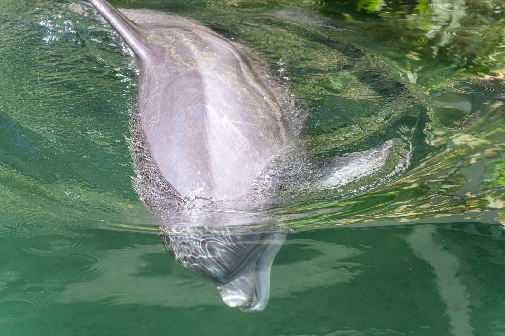
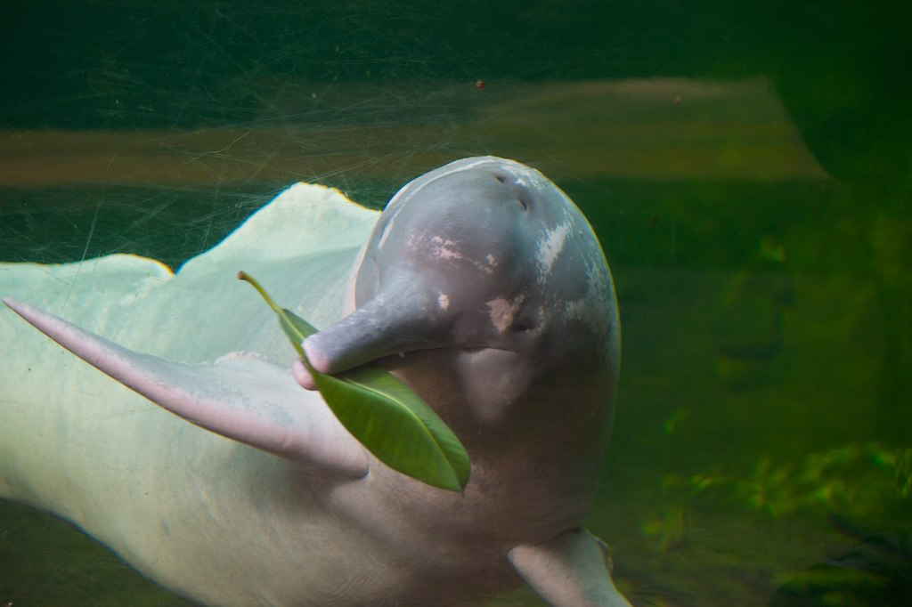
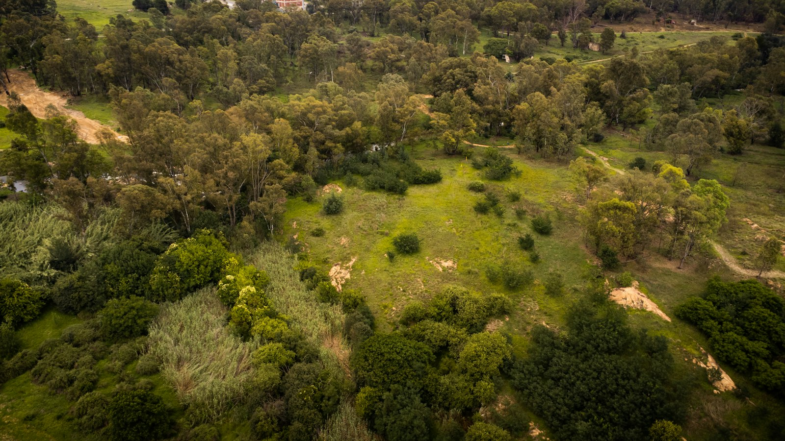

Amazon Field Guide · Wildlife No. 09
Amazon River Dolphin: Pink Sentinel of the Flooded Forest
Not every dolphin belongs in the ocean. Meet the boto—the blushing freshwater hunter that weaves between flooded tree trunks and warns us when a great river is in trouble.

Picture a forest that turns into a swimming pool every wet season. Tree trunks stand in tea-brown water. Fish dart between roots. And through that liquid maze slides a dolphin the colour of a sunset blush. Locals call it the boto. Scientists call it the Amazon river dolphin (Inia geoffrensis). Either way, it is one of the strangest—and most important—mammals in South America.
Adults can reach about 2.5 metres and 185 kilograms. Males may outweigh females by as much as 55 percent—one of the biggest size gaps among dolphins. Calves start slate-grey. Over years, skin abrasion and widened blood vessels turn many males a flamboyant pink that can deepen when they get excited. This is not paint. It is biology showing off in murky water.
Built for a flooded maze
Ocean dolphins have stiff necks. Botos do not. Unfused neck bones let them twist their heads about 90 degrees to peer around submerged trunks. Paddle-like flippers and a flexible body weave through log jams that would trap a stiff-spined cousin. A large melon—the rounded forehead organ—focuses clicks of biosonar that map prey hiding in silt. Small eyes still work surprisingly well, but sound does the heavy lifting when the river looks like chocolate milk.
“Indigenous communities treat the boto as a sentinel—when dolphins disappear, fish catches and water quality often follow.”
Life with the flood pulse
Three recognised subspecies range from Bolivia to Venezuela across the Amazon and Orinoco basins. In the dry season they favour main channels; when floods rise they push into várzea—seasonally flooded forest—to chase fish among buttress roots. Most adults travel alone or in pairs, though loose groups form when migrating fish swarm sandbars. Dawn and dusk are busy hunting windows. Play is famous too: tossing sticks, wrestling turtles at the surface, even “tail-walking” near boats. Mating peaks as floods begin; after about eleven months, a single calf nurses for more than a year.
As apex fish-eaters, botos help regulate mid-level predators such as piranhas and big catfish, indirectly protecting plant-eating fish that local people rely on. Their dives and surfacing also move nutrients around the floodplain. A healthy pink dolphin is a living report card for the river.
How a boto hunt works
- Map the dark. Broadband sonar clicks bounce off fish and crabs hidden in suspended sediment that scatters light.
- Feel the ripples. Whisker-like sensors on the long snout detect pressure waves from prey that try to freeze in place.
- Snap sideways. A flexible neck swings the jaws; bite force around 275 newtons cracks scaly fish or a young turtle’s shell.
- Eat widely. Studies list 53-plus fish species plus crustaceans and the occasional bird—one of the broadest menus of any cetacean (the group that includes whales and dolphins).
Five things that make a boto a survivor
- Unfused neck bones for sharp turns between flooded tree trunks.
- A slimmer body than ocean dolphins, which helps it slip under floating mats and log jams.
- Powerful biosonar that works when eyes cannot.
- A long, whiskered snout with crushing teeth for armoured catfish and crabs.
- Colour changes and playful social signals that still work in turbid water.

Trouble ahead—and reasons to hope
In Mamirauá Reserve, a well-studied stretch of the Brazilian Amazon, boto numbers have been falling by about half every ten years since the 1990s. Scientists warn that if that rate continues, the local population could shrink by about 94 percent over three generations (roughly 40 years). The fall is driven largely by deliberate kills and accidental drowning in nets. Dams already slice Amazon tributaries (hundreds more are planned), blocking migrations and changing the flood pulse that cues breeding. Artisanal gold mining dumps huge amounts of mercury into rivers; more than half of sampled dolphins in some studies exceed safe toxicity levels. Botos still get tangled in gillnets and, despite bans, have been killed for bait in the piracatinga catfish fishery. In 2023 a mega-drought heated Lake Tefé above 39 °C and killed 153 dolphins—about a tenth of the local population—in a single week.
In 2023, nine Amazon-basin nations joined the Global Declaration for River Dolphins, promising protected corridors, cleaner mining, and tools such as acoustic pingers to keep dolphins out of nets. Community patrols, fishing pauses, and veterinary rescue teams are already pulling stranded animals back from the brink. The science is clear: save the boto and you push for healthier rivers for people as well as wildlife.
The blushing sentinel will not survive on charm alone. It needs connected channels, cooler droughts, less mercury, and fishers who can earn a living without pink bait. Get those pieces right, and the flooded forest will keep its most magical swimmer—and the warning system that comes with it.


Odd facts
Word bank
- Biosonar
- — using sound clicks and echoes to “see” underwater.
- Boto
- — the local name for the Amazon river dolphin.
- Melon
- — the rounded fatty organ in a dolphin’s forehead that focuses sonar clicks.
- Sentinel
- — a species whose health warns us about the health of a whole ecosystem.
- Várzea
- — rainforest that floods in the wet season and becomes a watery maze of trees.
- Cetacean
- — the group of mammals that includes whales, dolphins, and porpoises.